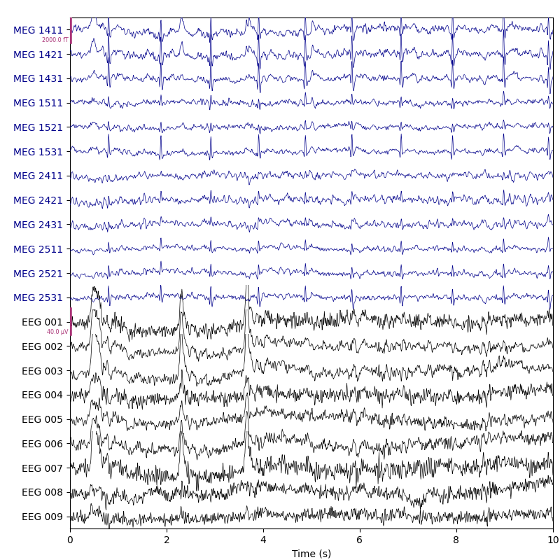
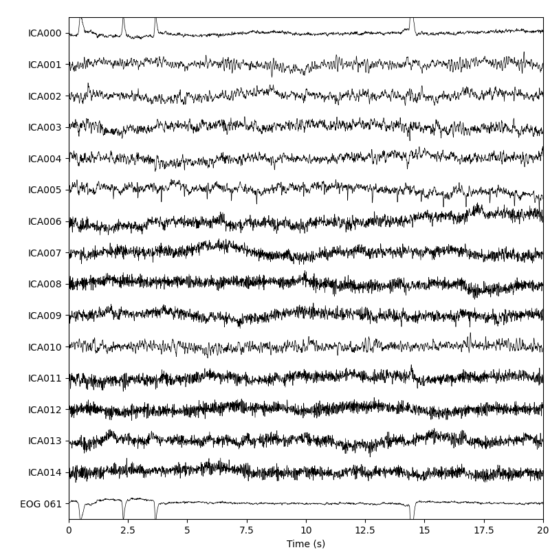
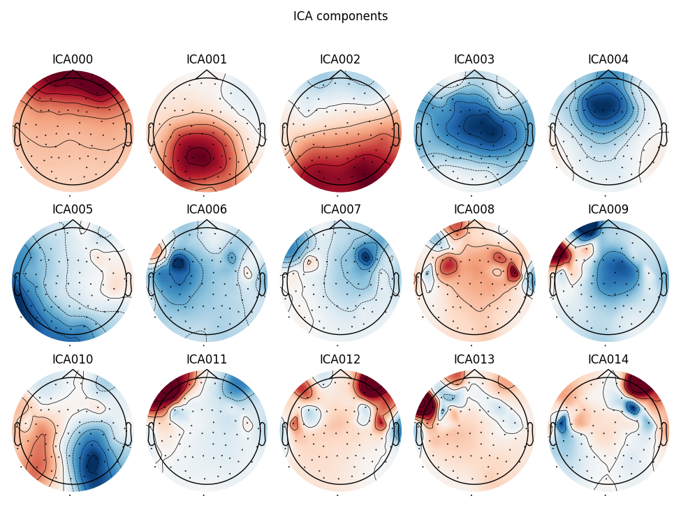
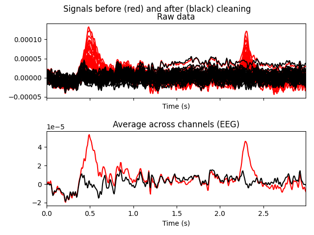
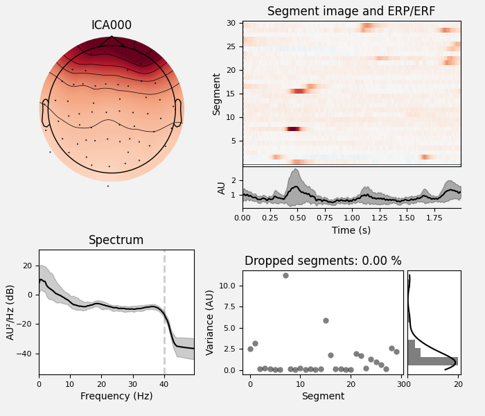
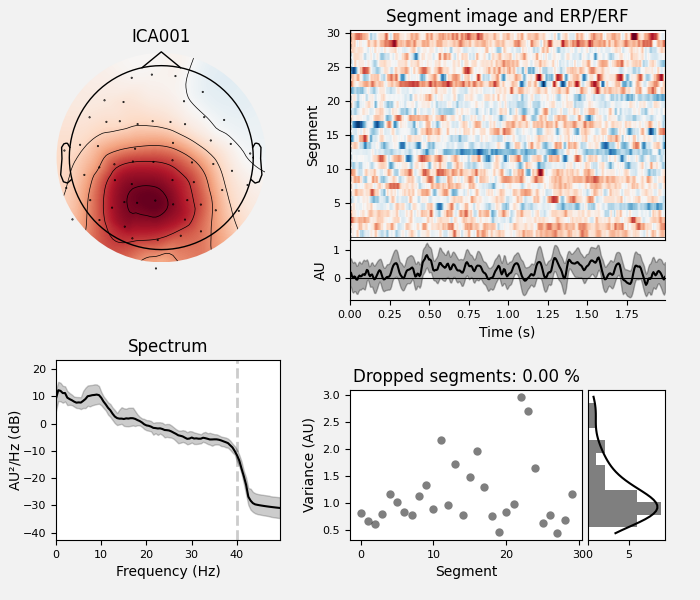
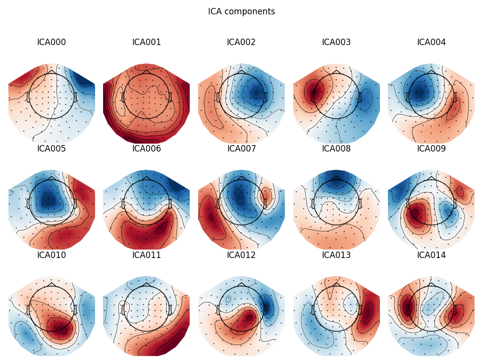
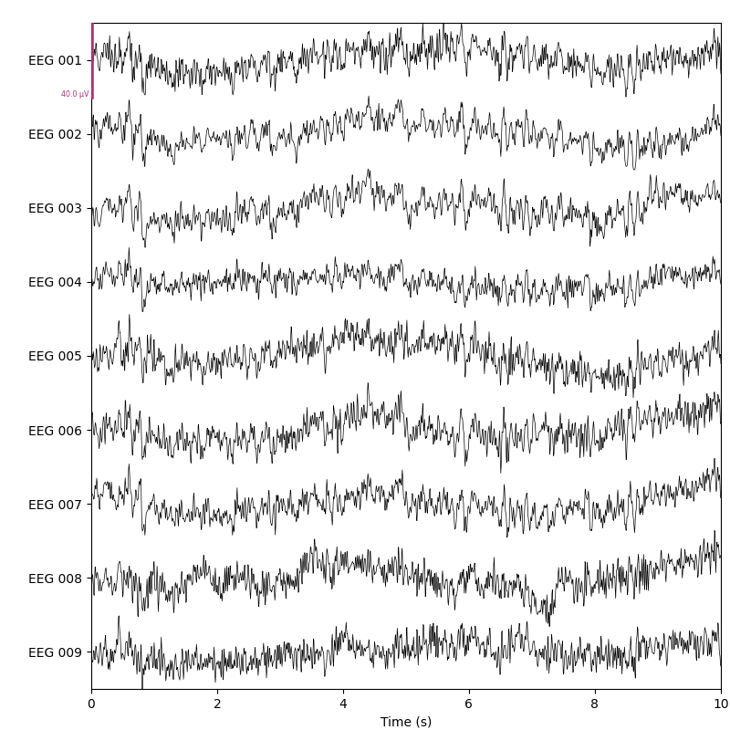

Note
Click here to download the full example code
Repairing artifacts with ICA automatically using ICLabel Model#
This tutorial covers automatically repairing signals using ICA with the ICLabel model [1], which originates in EEGLab. For conceptual background on ICA, see this scikit-learn tutorial. For a basic understanding of how to use ICA to remove artifacts, see the tutorial in MNE-Python.
We begin as always by importing the necessary Python modules and loading some
example data. Because ICA can be computationally
intense, we’ll also crop the data to 60 seconds; and to save ourselves from
repeatedly typing mne.preprocessing we’ll directly import a few functions
and classes from that submodule.
import os
import mne
from mne.preprocessing import ICA
from mne_icalabel import label_components
sample_data_folder = mne.datasets.sample.data_path()
sample_data_raw_file = os.path.join(
sample_data_folder, "MEG", "sample", "sample_audvis_filt-0-40_raw.fif"
)
raw = mne.io.read_raw_fif(sample_data_raw_file)
# Here we'll crop to 60 seconds and drop gradiometer channels for speed
raw.crop(tmax=60.0).pick_types(meg="mag", eeg=True, stim=True, eog=True)
raw.load_data()
Out:
Using default location ~/mne_data for sample...
Creating ~/mne_data
Downloading file 'MNE-sample-data-processed.tar.gz' from 'https://osf.io/86qa2/download?version=6' to '/home/circleci/mne_data'.
0%| | 0.00/1.65G [00:00<?, ?B/s]
0%| | 4.86M/1.65G [00:00<00:33, 48.5MB/s]
1%|▏ | 9.71M/1.65G [00:00<00:35, 46.8MB/s]
1%|▎ | 15.3M/1.65G [00:00<00:32, 50.7MB/s]
1%|▍ | 20.3M/1.65G [00:00<00:34, 47.5MB/s]
2%|▌ | 25.1M/1.65G [00:00<00:45, 35.8MB/s]
2%|▋ | 29.0M/1.65G [00:00<00:51, 31.3MB/s]
2%|▋ | 32.5M/1.65G [00:00<00:51, 31.7MB/s]
2%|▊ | 36.7M/1.65G [00:00<00:46, 34.6MB/s]
2%|▉ | 40.5M/1.65G [00:01<00:45, 35.4MB/s]
3%|█ | 45.8M/1.65G [00:01<00:39, 40.2MB/s]
3%|█ | 49.9M/1.65G [00:01<00:40, 39.2MB/s]
3%|█▏ | 54.2M/1.65G [00:01<00:39, 40.0MB/s]
4%|█▎ | 58.3M/1.65G [00:01<00:39, 40.4MB/s]
4%|█▍ | 62.4M/1.65G [00:01<00:44, 36.1MB/s]
4%|█▍ | 66.2M/1.65G [00:01<00:44, 35.4MB/s]
4%|█▌ | 70.0M/1.65G [00:01<00:44, 35.9MB/s]
5%|█▋ | 75.1M/1.65G [00:01<00:40, 39.3MB/s]
5%|█▊ | 79.1M/1.65G [00:02<00:41, 37.9MB/s]
5%|█▊ | 83.1M/1.65G [00:02<00:40, 38.5MB/s]
5%|█▉ | 87.0M/1.65G [00:02<00:42, 37.2MB/s]
6%|██ | 92.1M/1.65G [00:02<00:38, 40.8MB/s]
6%|██▏ | 96.2M/1.65G [00:02<00:42, 36.7MB/s]
6%|██▎ | 102M/1.65G [00:02<00:36, 43.0MB/s]
6%|██▍ | 107M/1.65G [00:02<00:39, 39.4MB/s]
7%|██▌ | 111M/1.65G [00:02<00:44, 35.0MB/s]
7%|██▋ | 114M/1.65G [00:03<00:49, 30.9MB/s]
7%|██▋ | 118M/1.65G [00:03<00:56, 27.3MB/s]
7%|██▊ | 121M/1.65G [00:03<00:56, 27.0MB/s]
7%|██▊ | 123M/1.65G [00:03<00:59, 25.9MB/s]
8%|██▉ | 127M/1.65G [00:03<00:55, 27.7MB/s]
8%|██▉ | 130M/1.65G [00:03<00:51, 29.5MB/s]
8%|███ | 134M/1.65G [00:03<00:49, 30.4MB/s]
8%|███▏ | 137M/1.65G [00:03<00:57, 26.6MB/s]
9%|███▏ | 141M/1.65G [00:04<00:48, 30.9MB/s]
9%|███▎ | 146M/1.65G [00:04<00:42, 35.8MB/s]
9%|███▍ | 151M/1.65G [00:04<00:37, 39.6MB/s]
9%|███▌ | 156M/1.65G [00:04<00:36, 41.2MB/s]
10%|███▋ | 160M/1.65G [00:04<00:35, 41.6MB/s]
10%|███▊ | 164M/1.65G [00:04<00:43, 34.5MB/s]
10%|███▊ | 168M/1.65G [00:04<00:45, 32.4MB/s]
10%|███▉ | 171M/1.65G [00:04<00:49, 29.7MB/s]
11%|████ | 174M/1.65G [00:05<00:59, 24.9MB/s]
11%|████ | 178M/1.65G [00:05<00:54, 27.1MB/s]
11%|████▏ | 181M/1.65G [00:05<00:59, 24.7MB/s]
11%|████▏ | 184M/1.65G [00:05<00:55, 26.6MB/s]
11%|████▎ | 188M/1.65G [00:05<00:49, 29.5MB/s]
12%|████▍ | 192M/1.65G [00:05<00:45, 32.0MB/s]
12%|████▌ | 196M/1.65G [00:05<00:42, 34.6MB/s]
12%|████▌ | 201M/1.65G [00:05<00:38, 37.5MB/s]
12%|████▋ | 204M/1.65G [00:05<00:39, 36.4MB/s]
13%|████▊ | 208M/1.65G [00:06<00:45, 31.8MB/s]
13%|████▊ | 212M/1.65G [00:06<00:44, 32.3MB/s]
13%|████▉ | 215M/1.65G [00:06<00:49, 29.3MB/s]
13%|█████ | 218M/1.65G [00:06<00:49, 29.1MB/s]
13%|█████ | 221M/1.65G [00:06<00:49, 29.0MB/s]
14%|█████▏ | 224M/1.65G [00:06<00:54, 26.3MB/s]
14%|█████▏ | 227M/1.65G [00:06<00:54, 26.1MB/s]
14%|█████▎ | 229M/1.65G [00:06<00:57, 24.9MB/s]
14%|█████▎ | 232M/1.65G [00:07<00:53, 26.5MB/s]
14%|█████▍ | 235M/1.65G [00:07<00:52, 26.9MB/s]
14%|█████▍ | 238M/1.65G [00:07<01:02, 22.5MB/s]
15%|█████▌ | 241M/1.65G [00:07<00:55, 25.3MB/s]
15%|█████▌ | 244M/1.65G [00:07<00:52, 26.6MB/s]
15%|█████▋ | 248M/1.65G [00:07<00:50, 27.7MB/s]
15%|█████▊ | 252M/1.65G [00:07<00:42, 32.6MB/s]
16%|█████▉ | 256M/1.65G [00:07<00:40, 34.5MB/s]
16%|█████▉ | 260M/1.65G [00:07<00:38, 36.0MB/s]
16%|██████ | 264M/1.65G [00:08<00:38, 36.0MB/s]
16%|██████▏ | 268M/1.65G [00:08<00:38, 35.5MB/s]
17%|██████▎ | 273M/1.65G [00:08<00:35, 39.4MB/s]
17%|██████▎ | 277M/1.65G [00:08<00:38, 35.9MB/s]
17%|██████▍ | 281M/1.65G [00:08<00:36, 37.1MB/s]
17%|██████▌ | 285M/1.65G [00:08<00:36, 37.7MB/s]
17%|██████▋ | 289M/1.65G [00:08<00:41, 33.2MB/s]
18%|██████▋ | 292M/1.65G [00:08<00:43, 31.3MB/s]
18%|██████▊ | 296M/1.65G [00:08<00:41, 32.6MB/s]
18%|██████▉ | 299M/1.65G [00:09<00:42, 31.5MB/s]
18%|██████▉ | 302M/1.65G [00:09<00:44, 30.1MB/s]
18%|███████ | 305M/1.65G [00:09<00:47, 28.2MB/s]
19%|███████ | 308M/1.65G [00:09<00:49, 27.1MB/s]
19%|███████▏ | 311M/1.65G [00:09<00:48, 27.5MB/s]
19%|███████▏ | 314M/1.65G [00:09<00:45, 29.2MB/s]
19%|███████▎ | 317M/1.65G [00:09<00:56, 23.7MB/s]
19%|███████▎ | 320M/1.65G [00:09<00:53, 24.8MB/s]
20%|███████▍ | 323M/1.65G [00:10<00:51, 25.9MB/s]
20%|███████▌ | 327M/1.65G [00:10<00:46, 28.6MB/s]
20%|███████▌ | 331M/1.65G [00:10<00:39, 33.4MB/s]
20%|███████▋ | 336M/1.65G [00:10<00:38, 34.6MB/s]
21%|███████▊ | 339M/1.65G [00:10<00:46, 28.1MB/s]
21%|███████▉ | 345M/1.65G [00:10<00:36, 35.9MB/s]
21%|████████ | 349M/1.65G [00:10<00:38, 33.8MB/s]
21%|████████ | 353M/1.65G [00:10<00:36, 35.5MB/s]
22%|████████▏ | 357M/1.65G [00:10<00:36, 35.5MB/s]
22%|████████▎ | 361M/1.65G [00:11<00:34, 37.1MB/s]
22%|████████▍ | 365M/1.65G [00:11<00:35, 35.8MB/s]
22%|████████▍ | 369M/1.65G [00:11<00:34, 37.1MB/s]
23%|████████▌ | 374M/1.65G [00:11<00:32, 39.6MB/s]
23%|████████▋ | 378M/1.65G [00:11<00:32, 39.5MB/s]
23%|████████▊ | 383M/1.65G [00:11<00:29, 43.6MB/s]
23%|████████▉ | 388M/1.65G [00:11<00:28, 44.7MB/s]
24%|█████████ | 393M/1.65G [00:11<00:29, 42.9MB/s]
24%|█████████▏ | 399M/1.65G [00:11<00:26, 47.0MB/s]
24%|█████████▎ | 403M/1.65G [00:12<00:27, 45.7MB/s]
25%|█████████▍ | 408M/1.65G [00:12<00:28, 43.8MB/s]
25%|█████████▍ | 412M/1.65G [00:12<00:30, 41.2MB/s]
25%|█████████▌ | 417M/1.65G [00:12<00:28, 43.0MB/s]
26%|█████████▋ | 422M/1.65G [00:12<00:27, 44.1MB/s]
26%|█████████▊ | 426M/1.65G [00:12<00:31, 39.4MB/s]
26%|█████████▉ | 431M/1.65G [00:12<00:29, 40.8MB/s]
26%|██████████ | 435M/1.65G [00:12<00:29, 41.6MB/s]
27%|██████████ | 439M/1.65G [00:12<00:28, 42.1MB/s]
27%|██████████▏ | 444M/1.65G [00:12<00:29, 40.7MB/s]
27%|██████████▎ | 448M/1.65G [00:13<00:29, 41.0MB/s]
27%|██████████▍ | 452M/1.65G [00:13<00:29, 40.4MB/s]
28%|██████████▍ | 456M/1.65G [00:13<00:29, 40.4MB/s]
28%|██████████▌ | 460M/1.65G [00:13<00:39, 30.4MB/s]
28%|██████████▋ | 463M/1.65G [00:13<00:39, 29.8MB/s]
28%|██████████▋ | 467M/1.65G [00:13<00:38, 30.4MB/s]
28%|██████████▊ | 470M/1.65G [00:13<00:37, 31.9MB/s]
29%|██████████▉ | 474M/1.65G [00:13<00:38, 30.3MB/s]
29%|██████████▉ | 477M/1.65G [00:14<00:37, 31.4MB/s]
29%|███████████ | 481M/1.65G [00:14<00:35, 33.2MB/s]
29%|███████████▏ | 484M/1.65G [00:14<00:35, 32.9MB/s]
30%|███████████▏ | 488M/1.65G [00:14<00:39, 29.7MB/s]
30%|███████████▎ | 492M/1.65G [00:14<00:36, 32.0MB/s]
30%|███████████▍ | 495M/1.65G [00:14<00:36, 31.4MB/s]
30%|███████████▍ | 498M/1.65G [00:14<00:36, 31.7MB/s]
30%|███████████▌ | 502M/1.65G [00:14<00:40, 28.3MB/s]
31%|███████████▋ | 507M/1.65G [00:14<00:32, 35.3MB/s]
31%|███████████▋ | 511M/1.65G [00:15<00:35, 32.1MB/s]
31%|███████████▊ | 514M/1.65G [00:15<00:36, 30.8MB/s]
31%|███████████▉ | 517M/1.65G [00:15<00:37, 30.5MB/s]
31%|███████████▉ | 521M/1.65G [00:15<00:36, 30.7MB/s]
32%|████████████ | 524M/1.65G [00:15<00:35, 31.4MB/s]
32%|████████████ | 527M/1.65G [00:15<00:42, 26.7MB/s]
32%|████████████▏ | 531M/1.65G [00:15<00:38, 29.3MB/s]
32%|████████████▎ | 534M/1.65G [00:15<00:40, 27.7MB/s]
33%|████████████▎ | 537M/1.65G [00:16<00:40, 27.2MB/s]
33%|████████████▍ | 540M/1.65G [00:16<00:40, 27.5MB/s]
33%|████████████▍ | 544M/1.65G [00:16<00:37, 29.6MB/s]
33%|████████████▌ | 548M/1.65G [00:16<00:34, 32.0MB/s]
33%|████████████▋ | 553M/1.65G [00:16<00:29, 37.3MB/s]
34%|████████████▊ | 557M/1.65G [00:16<00:28, 39.0MB/s]
34%|████████████▉ | 561M/1.65G [00:16<00:31, 34.2MB/s]
34%|████████████▉ | 564M/1.65G [00:16<00:33, 32.9MB/s]
34%|█████████████ | 568M/1.65G [00:16<00:32, 32.9MB/s]
35%|█████████████▏ | 571M/1.65G [00:17<00:32, 33.0MB/s]
35%|█████████████▏ | 575M/1.65G [00:17<00:32, 33.7MB/s]
35%|█████████████▎ | 578M/1.65G [00:17<00:31, 33.9MB/s]
35%|█████████████▍ | 582M/1.65G [00:17<00:32, 32.6MB/s]
35%|█████████████▍ | 585M/1.65G [00:17<00:33, 32.2MB/s]
36%|█████████████▌ | 589M/1.65G [00:17<00:32, 33.0MB/s]
36%|█████████████▋ | 593M/1.65G [00:17<00:30, 35.1MB/s]
36%|█████████████▋ | 596M/1.65G [00:17<00:30, 34.9MB/s]
36%|█████████████▊ | 600M/1.65G [00:17<00:32, 32.2MB/s]
36%|█████████████▊ | 603M/1.65G [00:18<00:36, 29.2MB/s]
37%|█████████████▉ | 607M/1.65G [00:18<00:32, 32.1MB/s]
37%|██████████████ | 611M/1.65G [00:18<00:30, 34.2MB/s]
37%|██████████████▏ | 615M/1.65G [00:18<00:31, 32.7MB/s]
37%|██████████████▏ | 618M/1.65G [00:18<00:31, 32.8MB/s]
38%|██████████████▎ | 622M/1.65G [00:18<00:31, 32.6MB/s]
38%|██████████████▎ | 625M/1.65G [00:18<00:37, 27.2MB/s]
38%|██████████████▍ | 628M/1.65G [00:18<00:39, 26.0MB/s]
38%|██████████████▍ | 631M/1.65G [00:19<00:43, 23.3MB/s]
38%|██████████████▌ | 634M/1.65G [00:19<00:39, 26.1MB/s]
39%|██████████████▋ | 637M/1.65G [00:19<00:39, 25.9MB/s]
39%|██████████████▋ | 640M/1.65G [00:19<00:39, 26.0MB/s]
39%|██████████████▊ | 643M/1.65G [00:19<00:34, 28.9MB/s]
39%|██████████████▊ | 646M/1.65G [00:19<00:34, 29.0MB/s]
39%|██████████████▉ | 650M/1.65G [00:19<00:31, 31.6MB/s]
40%|███████████████ | 653M/1.65G [00:19<00:32, 30.6MB/s]
40%|███████████████ | 656M/1.65G [00:19<00:35, 28.4MB/s]
40%|███████████████▏ | 659M/1.65G [00:20<00:39, 25.0MB/s]
40%|███████████████▏ | 662M/1.65G [00:20<00:40, 24.8MB/s]
40%|███████████████▎ | 665M/1.65G [00:20<00:38, 25.6MB/s]
40%|███████████████▎ | 667M/1.65G [00:20<00:39, 24.8MB/s]
41%|███████████████▍ | 670M/1.65G [00:20<00:45, 21.6MB/s]
41%|███████████████▍ | 673M/1.65G [00:20<00:41, 23.6MB/s]
41%|███████████████▌ | 675M/1.65G [00:20<00:48, 20.1MB/s]
41%|███████████████▌ | 677M/1.65G [00:21<01:03, 15.3MB/s]
41%|███████████████▌ | 679M/1.65G [00:21<01:02, 15.6MB/s]
41%|███████████████▋ | 682M/1.65G [00:21<00:52, 18.6MB/s]
41%|███████████████▋ | 684M/1.65G [00:21<00:52, 18.3MB/s]
42%|███████████████▊ | 687M/1.65G [00:21<00:45, 21.2MB/s]
42%|███████████████▊ | 689M/1.65G [00:21<00:46, 20.7MB/s]
42%|███████████████▉ | 692M/1.65G [00:21<00:45, 21.1MB/s]
42%|███████████████▉ | 695M/1.65G [00:21<00:40, 23.7MB/s]
42%|████████████████ | 697M/1.65G [00:21<00:39, 24.3MB/s]
42%|████████████████ | 700M/1.65G [00:21<00:39, 24.2MB/s]
42%|████████████████▏ | 702M/1.65G [00:22<00:45, 21.1MB/s]
43%|████████████████▏ | 704M/1.65G [00:22<00:46, 20.3MB/s]
43%|████████████████▎ | 707M/1.65G [00:22<00:42, 22.4MB/s]
43%|████████████████▎ | 711M/1.65G [00:22<00:37, 25.3MB/s]
43%|████████████████▍ | 714M/1.65G [00:22<00:35, 26.3MB/s]
43%|████████████████▍ | 716M/1.65G [00:22<00:41, 22.7MB/s]
43%|████████████████▌ | 719M/1.65G [00:22<00:42, 21.8MB/s]
44%|████████████████▌ | 721M/1.65G [00:22<00:43, 21.3MB/s]
44%|████████████████▋ | 723M/1.65G [00:23<00:45, 20.3MB/s]
44%|████████████████▋ | 725M/1.65G [00:23<00:45, 20.3MB/s]
44%|████████████████▋ | 727M/1.65G [00:23<00:53, 17.4MB/s]
44%|████████████████▊ | 731M/1.65G [00:23<00:46, 19.9MB/s]
44%|████████████████▊ | 733M/1.65G [00:23<00:42, 21.7MB/s]
45%|████████████████▉ | 736M/1.65G [00:23<00:47, 19.4MB/s]
45%|████████████████▉ | 738M/1.65G [00:23<00:47, 19.1MB/s]
45%|█████████████████ | 740M/1.65G [00:23<00:47, 19.1MB/s]
45%|█████████████████ | 742M/1.65G [00:24<00:51, 17.5MB/s]
45%|█████████████████ | 744M/1.65G [00:24<00:50, 18.0MB/s]
45%|█████████████████▏ | 745M/1.65G [00:24<01:02, 14.6MB/s]
45%|█████████████████▏ | 747M/1.65G [00:24<01:03, 14.3MB/s]
45%|█████████████████▏ | 750M/1.65G [00:24<00:51, 17.4MB/s]
45%|█████████████████▎ | 752M/1.65G [00:24<00:48, 18.5MB/s]
46%|█████████████████▎ | 754M/1.65G [00:24<00:50, 17.9MB/s]
46%|█████████████████▍ | 756M/1.65G [00:24<00:52, 17.2MB/s]
46%|█████████████████▍ | 758M/1.65G [00:25<00:57, 15.7MB/s]
46%|█████████████████▍ | 760M/1.65G [00:25<00:58, 15.2MB/s]
46%|█████████████████▍ | 761M/1.65G [00:25<01:02, 14.2MB/s]
46%|█████████████████▌ | 763M/1.65G [00:25<01:10, 12.7MB/s]
46%|█████████████████▌ | 764M/1.65G [00:25<01:10, 12.5MB/s]
46%|█████████████████▌ | 765M/1.65G [00:25<01:24, 10.5MB/s]
46%|█████████████████▌ | 766M/1.65G [00:25<01:24, 10.5MB/s]
46%|█████████████████▋ | 767M/1.65G [00:26<01:27, 10.1MB/s]
47%|█████████████████▋ | 769M/1.65G [00:26<01:22, 10.7MB/s]
47%|█████████████████▋ | 770M/1.65G [00:26<01:13, 12.0MB/s]
47%|█████████████████▋ | 772M/1.65G [00:26<01:13, 12.0MB/s]
47%|█████████████████▊ | 773M/1.65G [00:26<01:04, 13.7MB/s]
47%|█████████████████▊ | 775M/1.65G [00:26<01:03, 13.8MB/s]
47%|█████████████████▊ | 776M/1.65G [00:26<01:02, 14.0MB/s]
47%|█████████████████▉ | 778M/1.65G [00:26<01:07, 13.0MB/s]
47%|█████████████████▉ | 779M/1.65G [00:26<01:08, 12.8MB/s]
47%|█████████████████▉ | 781M/1.65G [00:26<01:05, 13.2MB/s]
47%|█████████████████▉ | 782M/1.65G [00:27<01:21, 10.7MB/s]
47%|██████████████████ | 783M/1.65G [00:27<01:15, 11.5MB/s]
47%|██████████████████ | 785M/1.65G [00:27<01:10, 12.2MB/s]
48%|██████████████████ | 786M/1.65G [00:27<01:15, 11.4MB/s]
48%|██████████████████ | 787M/1.65G [00:27<01:21, 10.6MB/s]
48%|██████████████████▏ | 789M/1.65G [00:27<01:21, 10.7MB/s]
48%|██████████████████▏ | 790M/1.65G [00:27<01:23, 10.4MB/s]
48%|██████████████████▏ | 791M/1.65G [00:27<01:23, 10.3MB/s]
48%|██████████████████▏ | 793M/1.65G [00:28<01:07, 12.7MB/s]
48%|██████████████████▎ | 795M/1.65G [00:28<00:58, 14.6MB/s]
48%|██████████████████▎ | 797M/1.65G [00:28<00:56, 15.0MB/s]
48%|██████████████████▎ | 799M/1.65G [00:28<00:54, 15.7MB/s]
48%|██████████████████▍ | 800M/1.65G [00:28<00:56, 15.1MB/s]
49%|██████████████████▍ | 802M/1.65G [00:28<00:57, 14.7MB/s]
49%|██████████████████▍ | 803M/1.65G [00:28<01:14, 11.4MB/s]
49%|██████████████████▍ | 804M/1.65G [00:29<01:28, 9.64MB/s]
49%|██████████████████▌ | 805M/1.65G [00:29<01:26, 9.76MB/s]
49%|██████████████████▌ | 807M/1.65G [00:29<01:23, 10.1MB/s]
49%|██████████████████▌ | 808M/1.65G [00:29<01:23, 10.2MB/s]
49%|██████████████████▌ | 809M/1.65G [00:29<01:19, 10.6MB/s]
49%|██████████████████▋ | 811M/1.65G [00:29<01:12, 11.7MB/s]
49%|██████████████████▋ | 812M/1.65G [00:29<01:02, 13.4MB/s]
49%|██████████████████▋ | 815M/1.65G [00:29<00:50, 16.6MB/s]
49%|██████████████████▊ | 817M/1.65G [00:29<00:48, 17.4MB/s]
50%|██████████████████▊ | 819M/1.65G [00:30<00:58, 14.4MB/s]
50%|██████████████████▊ | 820M/1.65G [00:30<00:54, 15.4MB/s]
50%|██████████████████▉ | 823M/1.65G [00:30<00:43, 18.9MB/s]
50%|██████████████████▉ | 826M/1.65G [00:30<00:41, 20.1MB/s]
50%|███████████████████ | 828M/1.65G [00:30<00:43, 19.0MB/s]
50%|███████████████████ | 830M/1.65G [00:30<00:44, 18.3MB/s]
50%|███████████████████ | 832M/1.65G [00:30<00:49, 16.5MB/s]
50%|███████████████████▏ | 833M/1.65G [00:30<00:51, 15.8MB/s]
51%|███████████████████▏ | 835M/1.65G [00:30<00:51, 16.0MB/s]
51%|███████████████████▏ | 837M/1.65G [00:31<00:51, 16.0MB/s]
51%|███████████████████▎ | 838M/1.65G [00:31<01:03, 12.8MB/s]
51%|███████████████████▎ | 840M/1.65G [00:31<01:06, 12.3MB/s]
51%|███████████████████▎ | 841M/1.65G [00:31<01:03, 12.7MB/s]
51%|███████████████████▍ | 843M/1.65G [00:31<00:55, 14.6MB/s]
51%|███████████████████▍ | 845M/1.65G [00:31<00:55, 14.5MB/s]
51%|███████████████████▍ | 846M/1.65G [00:31<00:55, 14.6MB/s]
51%|███████████████████▍ | 848M/1.65G [00:31<00:53, 15.1MB/s]
51%|███████████████████▌ | 849M/1.65G [00:32<00:57, 14.1MB/s]
51%|███████████████████▌ | 851M/1.65G [00:32<01:00, 13.2MB/s]
52%|███████████████████▌ | 852M/1.65G [00:32<01:01, 13.0MB/s]
52%|███████████████████▋ | 854M/1.65G [00:32<01:09, 11.5MB/s]
52%|███████████████████▋ | 855M/1.65G [00:32<01:01, 12.9MB/s]
52%|███████████████████▋ | 857M/1.65G [00:32<01:01, 12.9MB/s]
52%|███████████████████▋ | 858M/1.65G [00:32<01:09, 11.4MB/s]
52%|███████████████████▊ | 859M/1.65G [00:32<01:12, 10.9MB/s]
52%|███████████████████▊ | 860M/1.65G [00:32<01:12, 10.9MB/s]
52%|███████████████████▊ | 862M/1.65G [00:33<01:10, 11.2MB/s]
52%|███████████████████▊ | 863M/1.65G [00:33<01:03, 12.4MB/s]
52%|███████████████████▉ | 865M/1.65G [00:33<01:00, 13.1MB/s]
52%|███████████████████▉ | 866M/1.65G [00:33<01:05, 12.0MB/s]
53%|███████████████████▉ | 868M/1.65G [00:33<00:57, 13.6MB/s]
53%|███████████████████▉ | 869M/1.65G [00:33<00:55, 14.0MB/s]
53%|████████████████████ | 871M/1.65G [00:33<00:59, 13.2MB/s]
53%|████████████████████ | 872M/1.65G [00:33<01:08, 11.4MB/s]
53%|████████████████████ | 873M/1.65G [00:34<01:14, 10.5MB/s]
53%|████████████████████ | 875M/1.65G [00:34<01:21, 9.60MB/s]
53%|████████████████████▏ | 876M/1.65G [00:34<01:11, 10.8MB/s]
53%|████████████████████▏ | 878M/1.65G [00:34<01:05, 11.8MB/s]
53%|████████████████████▏ | 879M/1.65G [00:34<01:05, 11.9MB/s]
53%|████████████████████▎ | 881M/1.65G [00:34<00:56, 13.7MB/s]
53%|████████████████████▎ | 882M/1.65G [00:34<00:56, 13.7MB/s]
53%|████████████████████▎ | 884M/1.65G [00:34<00:55, 13.8MB/s]
54%|████████████████████▎ | 885M/1.65G [00:34<00:56, 13.7MB/s]
54%|████████████████████▍ | 887M/1.65G [00:35<00:49, 15.5MB/s]
54%|████████████████████▍ | 890M/1.65G [00:35<00:42, 18.1MB/s]
54%|████████████████████▌ | 892M/1.65G [00:35<00:40, 18.9MB/s]
54%|████████████████████▌ | 894M/1.65G [00:35<00:38, 19.8MB/s]
54%|████████████████████▌ | 896M/1.65G [00:35<00:38, 19.4MB/s]
54%|████████████████████▋ | 898M/1.65G [00:35<00:48, 15.6MB/s]
54%|████████████████████▋ | 900M/1.65G [00:35<00:54, 13.9MB/s]
55%|████████████████████▋ | 901M/1.65G [00:35<00:53, 14.1MB/s]
55%|████████████████████▊ | 903M/1.65G [00:36<00:54, 13.9MB/s]
55%|████████████████████▊ | 904M/1.65G [00:36<00:55, 13.5MB/s]
55%|████████████████████▊ | 906M/1.65G [00:36<00:54, 13.8MB/s]
55%|████████████████████▊ | 907M/1.65G [00:36<00:54, 13.6MB/s]
55%|████████████████████▉ | 908M/1.65G [00:36<00:57, 13.0MB/s]
55%|████████████████████▉ | 911M/1.65G [00:36<00:47, 15.6MB/s]
55%|████████████████████▉ | 912M/1.65G [00:36<00:46, 15.9MB/s]
55%|█████████████████████ | 914M/1.65G [00:36<00:53, 13.8MB/s]
55%|█████████████████████ | 915M/1.65G [00:36<00:52, 13.9MB/s]
55%|█████████████████████ | 917M/1.65G [00:37<00:52, 13.9MB/s]
56%|█████████████████████ | 918M/1.65G [00:37<00:51, 14.3MB/s]
56%|█████████████████████▏ | 921M/1.65G [00:37<00:44, 16.4MB/s]
56%|█████████████████████▏ | 922M/1.65G [00:37<00:42, 17.2MB/s]
56%|█████████████████████▏ | 924M/1.65G [00:37<00:46, 15.7MB/s]
56%|█████████████████████▎ | 926M/1.65G [00:37<00:54, 13.4MB/s]
56%|█████████████████████▎ | 928M/1.65G [00:37<00:50, 14.4MB/s]
56%|█████████████████████▎ | 929M/1.65G [00:37<00:48, 14.9MB/s]
56%|█████████████████████▍ | 931M/1.65G [00:37<00:47, 15.1MB/s]
56%|█████████████████████▍ | 932M/1.65G [00:38<00:50, 14.4MB/s]
56%|█████████████████████▍ | 934M/1.65G [00:38<00:51, 13.9MB/s]
57%|█████████████████████▌ | 935M/1.65G [00:38<00:50, 14.2MB/s]
57%|█████████████████████▌ | 938M/1.65G [00:38<00:39, 18.0MB/s]
57%|█████████████████████▋ | 941M/1.65G [00:38<00:33, 21.0MB/s]
57%|█████████████████████▋ | 944M/1.65G [00:38<00:31, 22.4MB/s]
57%|█████████████████████▊ | 946M/1.65G [00:38<00:34, 20.8MB/s]
57%|█████████████████████▊ | 949M/1.65G [00:38<00:31, 22.5MB/s]
58%|█████████████████████▉ | 951M/1.65G [00:38<00:31, 22.6MB/s]
58%|█████████████████████▉ | 954M/1.65G [00:39<00:37, 18.6MB/s]
58%|█████████████████████▉ | 956M/1.65G [00:39<00:36, 19.3MB/s]
58%|██████████████████████ | 958M/1.65G [00:39<00:33, 20.7MB/s]
58%|██████████████████████ | 961M/1.65G [00:39<00:33, 20.9MB/s]
58%|██████████████████████▏ | 963M/1.65G [00:39<00:34, 20.0MB/s]
58%|██████████████████████▏ | 965M/1.65G [00:39<00:34, 19.9MB/s]
58%|██████████████████████▏ | 967M/1.65G [00:39<00:35, 19.1MB/s]
59%|██████████████████████▎ | 969M/1.65G [00:39<00:35, 19.1MB/s]
59%|██████████████████████▎ | 971M/1.65G [00:40<00:41, 16.4MB/s]
59%|██████████████████████▎ | 973M/1.65G [00:40<00:45, 15.0MB/s]
59%|██████████████████████▍ | 974M/1.65G [00:40<00:45, 14.9MB/s]
59%|██████████████████████▍ | 977M/1.65G [00:40<00:38, 17.8MB/s]
59%|██████████████████████▌ | 979M/1.65G [00:40<00:37, 18.0MB/s]
59%|██████████████████████▌ | 981M/1.65G [00:40<00:34, 19.4MB/s]
60%|██████████████████████▌ | 984M/1.65G [00:40<00:31, 21.0MB/s]
60%|██████████████████████▋ | 986M/1.65G [00:40<00:33, 20.1MB/s]
60%|██████████████████████▋ | 988M/1.65G [00:40<00:35, 19.0MB/s]
60%|██████████████████████▊ | 990M/1.65G [00:41<00:34, 19.4MB/s]
60%|██████████████████████▊ | 992M/1.65G [00:41<00:34, 19.3MB/s]
60%|██████████████████████▊ | 994M/1.65G [00:41<00:34, 19.0MB/s]
60%|██████████████████████▉ | 997M/1.65G [00:41<00:30, 21.7MB/s]
60%|██████████████████████▉ | 999M/1.65G [00:41<00:29, 21.9MB/s]
61%|██████████████████████▍ | 1.00G/1.65G [00:41<00:29, 22.4MB/s]
61%|██████████████████████▍ | 1.01G/1.65G [00:41<00:24, 26.9MB/s]
61%|██████████████████████▌ | 1.01G/1.65G [00:41<00:26, 24.7MB/s]
61%|██████████████████████▌ | 1.01G/1.65G [00:41<00:29, 21.8MB/s]
61%|██████████████████████▋ | 1.01G/1.65G [00:42<00:30, 20.7MB/s]
61%|██████████████████████▋ | 1.01G/1.65G [00:42<00:29, 21.3MB/s]
62%|██████████████████████▊ | 1.02G/1.65G [00:42<00:32, 19.9MB/s]
62%|██████████████████████▊ | 1.02G/1.65G [00:42<00:26, 23.6MB/s]
62%|██████████████████████▉ | 1.02G/1.65G [00:42<00:27, 22.6MB/s]
62%|██████████████████████▉ | 1.03G/1.65G [00:42<00:29, 21.2MB/s]
62%|██████████████████████▉ | 1.03G/1.65G [00:42<00:30, 20.6MB/s]
62%|███████████████████████ | 1.03G/1.65G [00:42<00:30, 20.8MB/s]
62%|███████████████████████ | 1.03G/1.65G [00:42<00:28, 21.7MB/s]
63%|███████████████████████▏ | 1.03G/1.65G [00:43<00:26, 23.3MB/s]
63%|███████████████████████▏ | 1.04G/1.65G [00:43<00:25, 24.4MB/s]
63%|███████████████████████▎ | 1.04G/1.65G [00:43<00:25, 24.1MB/s]
63%|███████████████████████▎ | 1.04G/1.65G [00:43<00:26, 23.5MB/s]
63%|███████████████████████▍ | 1.04G/1.65G [00:43<00:25, 23.7MB/s]
63%|███████████████████████▍ | 1.05G/1.65G [00:43<00:25, 23.5MB/s]
64%|███████████████████████▌ | 1.05G/1.65G [00:43<00:24, 24.6MB/s]
64%|███████████████████████▌ | 1.05G/1.65G [00:43<00:25, 23.9MB/s]
64%|███████████████████████▌ | 1.06G/1.65G [00:43<00:24, 23.9MB/s]
64%|███████████████████████▋ | 1.06G/1.65G [00:44<00:28, 20.8MB/s]
64%|███████████████████████▋ | 1.06G/1.65G [00:44<00:30, 19.3MB/s]
64%|███████████████████████▊ | 1.06G/1.65G [00:44<00:30, 19.5MB/s]
64%|███████████████████████▊ | 1.06G/1.65G [00:44<00:36, 16.2MB/s]
64%|███████████████████████▊ | 1.07G/1.65G [00:44<00:35, 16.5MB/s]
65%|███████████████████████▉ | 1.07G/1.65G [00:44<00:35, 16.4MB/s]
65%|███████████████████████▉ | 1.07G/1.65G [00:44<00:41, 13.9MB/s]
65%|███████████████████████▉ | 1.07G/1.65G [00:44<00:39, 14.8MB/s]
65%|████████████████████████ | 1.07G/1.65G [00:45<00:36, 16.1MB/s]
65%|████████████████████████ | 1.07G/1.65G [00:45<00:35, 16.5MB/s]
65%|████████████████████████ | 1.08G/1.65G [00:45<00:33, 17.4MB/s]
65%|████████████████████████▏ | 1.08G/1.65G [00:45<00:33, 17.4MB/s]
65%|████████████████████████▏ | 1.08G/1.65G [00:45<00:30, 18.8MB/s]
66%|████████████████████████▏ | 1.08G/1.65G [00:45<00:29, 19.3MB/s]
66%|████████████████████████▎ | 1.09G/1.65G [00:45<00:25, 21.9MB/s]
66%|████████████████████████▎ | 1.09G/1.65G [00:45<00:25, 21.8MB/s]
66%|████████████████████████▍ | 1.09G/1.65G [00:45<00:23, 23.5MB/s]
66%|████████████████████████▍ | 1.09G/1.65G [00:45<00:24, 22.9MB/s]
66%|████████████████████████▌ | 1.10G/1.65G [00:46<00:23, 24.1MB/s]
66%|████████████████████████▌ | 1.10G/1.65G [00:46<00:22, 24.2MB/s]
67%|████████████████████████▋ | 1.10G/1.65G [00:46<00:20, 26.9MB/s]
67%|████████████████████████▋ | 1.11G/1.65G [00:46<00:19, 28.2MB/s]
67%|████████████████████████▊ | 1.11G/1.65G [00:46<00:21, 25.7MB/s]
67%|████████████████████████▊ | 1.11G/1.65G [00:46<00:20, 26.1MB/s]
67%|████████████████████████▉ | 1.11G/1.65G [00:46<00:21, 24.9MB/s]
68%|████████████████████████▉ | 1.12G/1.65G [00:46<00:22, 24.1MB/s]
68%|█████████████████████████ | 1.12G/1.65G [00:46<00:24, 21.9MB/s]
68%|█████████████████████████ | 1.12G/1.65G [00:47<00:25, 20.8MB/s]
68%|█████████████████████████▏ | 1.12G/1.65G [00:47<00:27, 19.4MB/s]
68%|█████████████████████████▏ | 1.13G/1.65G [00:47<00:25, 20.7MB/s]
68%|█████████████████████████▏ | 1.13G/1.65G [00:47<00:24, 21.1MB/s]
68%|█████████████████████████▎ | 1.13G/1.65G [00:47<00:26, 19.8MB/s]
68%|█████████████████████████▎ | 1.13G/1.65G [00:47<00:27, 19.1MB/s]
69%|█████████████████████████▍ | 1.13G/1.65G [00:47<00:28, 18.5MB/s]
69%|█████████████████████████▍ | 1.14G/1.65G [00:47<00:29, 17.7MB/s]
69%|█████████████████████████▍ | 1.14G/1.65G [00:48<00:25, 20.3MB/s]
69%|█████████████████████████▌ | 1.14G/1.65G [00:48<00:26, 19.6MB/s]
69%|█████████████████████████▋ | 1.15G/1.65G [00:48<00:19, 26.0MB/s]
70%|█████████████████████████▋ | 1.15G/1.65G [00:48<00:20, 24.0MB/s]
70%|█████████████████████████▊ | 1.15G/1.65G [00:48<00:20, 24.9MB/s]
70%|█████████████████████████▊ | 1.15G/1.65G [00:48<00:21, 22.8MB/s]
70%|█████████████████████████▉ | 1.16G/1.65G [00:48<00:21, 22.8MB/s]
70%|█████████████████████████▉ | 1.16G/1.65G [00:48<00:22, 22.2MB/s]
70%|█████████████████████████▉ | 1.16G/1.65G [00:49<00:24, 20.4MB/s]
70%|██████████████████████████ | 1.16G/1.65G [00:49<00:25, 19.1MB/s]
71%|██████████████████████████ | 1.17G/1.65G [00:49<00:25, 18.9MB/s]
71%|██████████████████████████▏ | 1.17G/1.65G [00:49<00:23, 20.4MB/s]
71%|██████████████████████████▏ | 1.17G/1.65G [00:49<00:24, 20.1MB/s]
71%|██████████████████████████▏ | 1.17G/1.65G [00:49<00:22, 21.5MB/s]
71%|██████████████████████████▎ | 1.17G/1.65G [00:49<00:27, 17.2MB/s]
71%|██████████████████████████▎ | 1.18G/1.65G [00:49<00:28, 16.8MB/s]
71%|██████████████████████████▍ | 1.18G/1.65G [00:49<00:29, 16.3MB/s]
72%|██████████████████████████▍ | 1.18G/1.65G [00:50<00:21, 22.2MB/s]
72%|██████████████████████████▌ | 1.19G/1.65G [00:50<00:17, 26.8MB/s]
72%|██████████████████████████▋ | 1.19G/1.65G [00:50<00:17, 26.6MB/s]
72%|██████████████████████████▊ | 1.20G/1.65G [00:50<00:12, 35.5MB/s]
73%|██████████████████████████▉ | 1.20G/1.65G [00:50<00:13, 33.4MB/s]
73%|██████████████████████████▉ | 1.20G/1.65G [00:50<00:19, 23.5MB/s]
73%|███████████████████████████ | 1.21G/1.65G [00:51<00:20, 21.4MB/s]
73%|███████████████████████████ | 1.21G/1.65G [00:51<00:17, 24.7MB/s]
73%|███████████████████████████▏ | 1.21G/1.65G [00:51<00:15, 28.1MB/s]
74%|███████████████████████████▎ | 1.22G/1.65G [00:51<00:13, 33.0MB/s]
74%|███████████████████████████▍ | 1.22G/1.65G [00:51<00:12, 35.2MB/s]
74%|███████████████████████████▍ | 1.23G/1.65G [00:51<00:14, 30.3MB/s]
74%|███████████████████████████▌ | 1.23G/1.65G [00:51<00:14, 29.9MB/s]
75%|███████████████████████████▌ | 1.23G/1.65G [00:51<00:14, 28.8MB/s]
75%|███████████████████████████▋ | 1.24G/1.65G [00:51<00:15, 27.5MB/s]
75%|███████████████████████████▊ | 1.24G/1.65G [00:52<00:15, 26.7MB/s]
75%|███████████████████████████▊ | 1.24G/1.65G [00:52<00:13, 29.3MB/s]
75%|███████████████████████████▉ | 1.25G/1.65G [00:52<00:13, 29.1MB/s]
76%|████████████████████████████ | 1.25G/1.65G [00:52<00:12, 32.9MB/s]
76%|████████████████████████████ | 1.25G/1.65G [00:52<00:12, 31.7MB/s]
76%|████████████████████████████▏ | 1.26G/1.65G [00:52<00:12, 31.9MB/s]
76%|████████████████████████████▏ | 1.26G/1.65G [00:52<00:13, 29.0MB/s]
77%|████████████████████████████▎ | 1.26G/1.65G [00:52<00:11, 32.8MB/s]
77%|████████████████████████████▍ | 1.27G/1.65G [00:52<00:11, 33.1MB/s]
77%|████████████████████████████▍ | 1.27G/1.65G [00:53<00:11, 31.9MB/s]
77%|████████████████████████████▌ | 1.28G/1.65G [00:53<00:09, 39.1MB/s]
78%|████████████████████████████▋ | 1.28G/1.65G [00:53<00:09, 41.1MB/s]
78%|████████████████████████████▊ | 1.29G/1.65G [00:53<00:08, 40.9MB/s]
78%|████████████████████████████▉ | 1.29G/1.65G [00:53<00:09, 39.3MB/s]
78%|█████████████████████████████ | 1.30G/1.65G [00:53<00:08, 43.8MB/s]
79%|█████████████████████████████ | 1.30G/1.65G [00:53<00:09, 38.8MB/s]
79%|█████████████████████████████▏ | 1.30G/1.65G [00:53<00:09, 37.5MB/s]
79%|█████████████████████████████▎ | 1.31G/1.65G [00:53<00:09, 37.6MB/s]
79%|█████████████████████████████▍ | 1.31G/1.65G [00:54<00:10, 33.7MB/s]
80%|█████████████████████████████▍ | 1.32G/1.65G [00:54<00:09, 34.8MB/s]
80%|█████████████████████████████▌ | 1.32G/1.65G [00:54<00:09, 36.2MB/s]
80%|█████████████████████████████▋ | 1.33G/1.65G [00:54<00:07, 41.0MB/s]
81%|█████████████████████████████▊ | 1.33G/1.65G [00:54<00:07, 44.2MB/s]
81%|█████████████████████████████▉ | 1.34G/1.65G [00:54<00:07, 45.2MB/s]
81%|██████████████████████████████ | 1.34G/1.65G [00:54<00:08, 38.9MB/s]
81%|██████████████████████████████ | 1.34G/1.65G [00:54<00:08, 35.1MB/s]
82%|██████████████████████████████▏ | 1.35G/1.65G [00:54<00:08, 35.1MB/s]
82%|██████████████████████████████▎ | 1.35G/1.65G [00:55<00:13, 22.0MB/s]
82%|██████████████████████████████▎ | 1.35G/1.65G [00:55<00:17, 17.2MB/s]
82%|██████████████████████████████▎ | 1.36G/1.65G [00:55<00:17, 17.3MB/s]
82%|██████████████████████████████▍ | 1.36G/1.65G [00:55<00:16, 17.8MB/s]
82%|██████████████████████████████▍ | 1.36G/1.65G [00:56<00:18, 15.4MB/s]
82%|██████████████████████████████▌ | 1.36G/1.65G [00:56<00:18, 16.1MB/s]
83%|██████████████████████████████▌ | 1.37G/1.65G [00:56<00:15, 18.1MB/s]
83%|██████████████████████████████▋ | 1.37G/1.65G [00:56<00:12, 23.2MB/s]
83%|██████████████████████████████▋ | 1.37G/1.65G [00:56<00:10, 26.1MB/s]
83%|██████████████████████████████▊ | 1.38G/1.65G [00:56<00:09, 28.4MB/s]
83%|██████████████████████████████▉ | 1.38G/1.65G [00:56<00:09, 29.7MB/s]
84%|██████████████████████████████▉ | 1.38G/1.65G [00:57<00:16, 16.4MB/s]
84%|███████████████████████████████ | 1.39G/1.65G [00:57<00:16, 16.4MB/s]
84%|███████████████████████████████ | 1.39G/1.65G [00:57<00:17, 14.8MB/s]
84%|███████████████████████████████ | 1.39G/1.65G [00:57<00:19, 13.8MB/s]
84%|███████████████████████████████▏ | 1.39G/1.65G [00:57<00:18, 13.8MB/s]
84%|███████████████████████████████▏ | 1.39G/1.65G [00:57<00:18, 13.9MB/s]
84%|███████████████████████████████▏ | 1.39G/1.65G [00:57<00:18, 13.7MB/s]
84%|███████████████████████████████▎ | 1.40G/1.65G [00:58<00:18, 14.0MB/s]
85%|███████████████████████████████▎ | 1.40G/1.65G [00:58<00:16, 15.5MB/s]
85%|███████████████████████████████▎ | 1.40G/1.65G [00:58<00:16, 15.0MB/s]
85%|███████████████████████████████▎ | 1.40G/1.65G [00:58<00:17, 14.3MB/s]
85%|███████████████████████████████▍ | 1.40G/1.65G [00:58<00:17, 14.3MB/s]
85%|███████████████████████████████▍ | 1.40G/1.65G [00:58<00:20, 12.4MB/s]
85%|███████████████████████████████▍ | 1.41G/1.65G [00:58<00:20, 12.2MB/s]
85%|███████████████████████████████▍ | 1.41G/1.65G [00:58<00:22, 11.1MB/s]
85%|███████████████████████████████▌ | 1.41G/1.65G [00:58<00:20, 12.2MB/s]
85%|███████████████████████████████▌ | 1.41G/1.65G [00:59<00:16, 14.4MB/s]
85%|███████████████████████████████▋ | 1.41G/1.65G [00:59<00:13, 17.9MB/s]
86%|███████████████████████████████▋ | 1.42G/1.65G [00:59<00:11, 19.9MB/s]
86%|███████████████████████████████▊ | 1.42G/1.65G [00:59<00:10, 22.0MB/s]
86%|███████████████████████████████▊ | 1.42G/1.65G [00:59<00:12, 18.4MB/s]
86%|███████████████████████████████▊ | 1.42G/1.65G [00:59<00:12, 18.3MB/s]
86%|███████████████████████████████▉ | 1.43G/1.65G [00:59<00:11, 20.6MB/s]
86%|███████████████████████████████▉ | 1.43G/1.65G [00:59<00:11, 19.2MB/s]
87%|████████████████████████████████ | 1.43G/1.65G [01:00<00:14, 15.6MB/s]
87%|████████████████████████████████ | 1.43G/1.65G [01:00<00:14, 15.3MB/s]
87%|████████████████████████████████ | 1.43G/1.65G [01:00<00:11, 18.4MB/s]
87%|████████████████████████████████▏ | 1.44G/1.65G [01:00<00:10, 20.3MB/s]
87%|████████████████████████████████▏ | 1.44G/1.65G [01:00<00:11, 18.6MB/s]
87%|████████████████████████████████▎ | 1.44G/1.65G [01:00<00:10, 20.8MB/s]
87%|████████████████████████████████▎ | 1.45G/1.65G [01:00<00:08, 24.4MB/s]
88%|████████████████████████████████▍ | 1.45G/1.65G [01:00<00:07, 26.6MB/s]
88%|████████████████████████████████▌ | 1.45G/1.65G [01:00<00:06, 29.1MB/s]
88%|████████████████████████████████▌ | 1.46G/1.65G [01:01<00:06, 29.9MB/s]
88%|████████████████████████████████▋ | 1.46G/1.65G [01:01<00:07, 25.7MB/s]
88%|████████████████████████████████▋ | 1.46G/1.65G [01:01<00:08, 22.4MB/s]
89%|████████████████████████████████▊ | 1.46G/1.65G [01:01<00:10, 18.7MB/s]
89%|████████████████████████████████▊ | 1.47G/1.65G [01:01<00:10, 17.3MB/s]
89%|████████████████████████████████▊ | 1.47G/1.65G [01:01<00:11, 16.1MB/s]
89%|████████████████████████████████▉ | 1.47G/1.65G [01:01<00:11, 15.9MB/s]
89%|████████████████████████████████▉ | 1.47G/1.65G [01:02<00:10, 18.0MB/s]
89%|█████████████████████████████████ | 1.48G/1.65G [01:02<00:08, 20.3MB/s]
90%|█████████████████████████████████ | 1.48G/1.65G [01:02<00:06, 26.1MB/s]
90%|█████████████████████████████████▏ | 1.48G/1.65G [01:02<00:05, 28.9MB/s]
90%|█████████████████████████████████▎ | 1.49G/1.65G [01:02<00:05, 29.1MB/s]
90%|█████████████████████████████████▎ | 1.49G/1.65G [01:02<00:05, 31.3MB/s]
90%|█████████████████████████████████▍ | 1.49G/1.65G [01:02<00:05, 27.6MB/s]
91%|█████████████████████████████████▍ | 1.50G/1.65G [01:02<00:05, 26.3MB/s]
91%|█████████████████████████████████▌ | 1.50G/1.65G [01:03<00:05, 26.3MB/s]
91%|█████████████████████████████████▌ | 1.50G/1.65G [01:03<00:07, 21.0MB/s]
91%|█████████████████████████████████▋ | 1.50G/1.65G [01:03<00:08, 17.8MB/s]
91%|█████████████████████████████████▋ | 1.51G/1.65G [01:03<00:08, 18.1MB/s]
91%|█████████████████████████████████▊ | 1.51G/1.65G [01:03<00:07, 19.3MB/s]
92%|█████████████████████████████████▊ | 1.51G/1.65G [01:03<00:05, 24.0MB/s]
92%|█████████████████████████████████▉ | 1.52G/1.65G [01:03<00:06, 19.9MB/s]
92%|█████████████████████████████████▉ | 1.52G/1.65G [01:04<00:07, 19.1MB/s]
92%|██████████████████████████████████ | 1.52G/1.65G [01:04<00:06, 19.4MB/s]
92%|██████████████████████████████████ | 1.52G/1.65G [01:04<00:06, 19.1MB/s]
92%|██████████████████████████████████ | 1.52G/1.65G [01:04<00:06, 19.2MB/s]
92%|██████████████████████████████████▏ | 1.53G/1.65G [01:04<00:06, 19.1MB/s]
92%|██████████████████████████████████▏ | 1.53G/1.65G [01:04<00:06, 19.1MB/s]
93%|██████████████████████████████████▏ | 1.53G/1.65G [01:04<00:07, 16.9MB/s]
93%|██████████████████████████████████▎ | 1.53G/1.65G [01:04<00:06, 17.9MB/s]
93%|██████████████████████████████████▎ | 1.53G/1.65G [01:04<00:05, 20.1MB/s]
93%|██████████████████████████████████▍ | 1.54G/1.65G [01:05<00:05, 20.3MB/s]
93%|██████████████████████████████████▍ | 1.54G/1.65G [01:05<00:04, 24.9MB/s]
93%|██████████████████████████████████▌ | 1.54G/1.65G [01:05<00:04, 27.2MB/s]
94%|██████████████████████████████████▌ | 1.55G/1.65G [01:05<00:03, 27.2MB/s]
94%|██████████████████████████████████▋ | 1.55G/1.65G [01:05<00:03, 31.4MB/s]
94%|██████████████████████████████████▊ | 1.55G/1.65G [01:05<00:02, 34.2MB/s]
94%|██████████████████████████████████▉ | 1.56G/1.65G [01:05<00:03, 30.7MB/s]
94%|██████████████████████████████████▉ | 1.56G/1.65G [01:05<00:03, 25.3MB/s]
95%|███████████████████████████████████ | 1.56G/1.65G [01:06<00:04, 19.4MB/s]
95%|███████████████████████████████████ | 1.57G/1.65G [01:06<00:04, 19.1MB/s]
95%|███████████████████████████████████ | 1.57G/1.65G [01:06<00:04, 17.3MB/s]
95%|███████████████████████████████████▏ | 1.57G/1.65G [01:06<00:04, 17.5MB/s]
95%|███████████████████████████████████▏ | 1.57G/1.65G [01:06<00:04, 17.8MB/s]
95%|███████████████████████████████████▎ | 1.58G/1.65G [01:06<00:03, 20.4MB/s]
96%|███████████████████████████████████▎ | 1.58G/1.65G [01:06<00:03, 22.7MB/s]
96%|███████████████████████████████████▍ | 1.58G/1.65G [01:06<00:03, 22.5MB/s]
96%|███████████████████████████████████▍ | 1.58G/1.65G [01:07<00:02, 25.2MB/s]
96%|███████████████████████████████████▌ | 1.59G/1.65G [01:07<00:02, 22.5MB/s]
96%|███████████████████████████████████▌ | 1.59G/1.65G [01:07<00:02, 22.4MB/s]
96%|███████████████████████████████████▋ | 1.59G/1.65G [01:07<00:02, 22.9MB/s]
96%|███████████████████████████████████▋ | 1.59G/1.65G [01:07<00:02, 23.1MB/s]
97%|███████████████████████████████████▊ | 1.60G/1.65G [01:07<00:01, 27.5MB/s]
97%|███████████████████████████████████▊ | 1.60G/1.65G [01:07<00:01, 27.1MB/s]
97%|███████████████████████████████████▉ | 1.60G/1.65G [01:07<00:01, 26.8MB/s]
97%|███████████████████████████████████▉ | 1.61G/1.65G [01:07<00:01, 25.3MB/s]
97%|████████████████████████████████████ | 1.61G/1.65G [01:08<00:02, 21.1MB/s]
97%|████████████████████████████████████ | 1.61G/1.65G [01:08<00:02, 20.0MB/s]
98%|████████████████████████████████████ | 1.61G/1.65G [01:08<00:02, 15.5MB/s]
98%|████████████████████████████████████▏| 1.62G/1.65G [01:08<00:02, 16.9MB/s]
98%|████████████████████████████████████▏| 1.62G/1.65G [01:09<00:03, 10.3MB/s]
98%|████████████████████████████████████▍| 1.63G/1.65G [01:09<00:01, 21.9MB/s]
99%|████████████████████████████████████▌| 1.63G/1.65G [01:09<00:00, 22.7MB/s]
99%|████████████████████████████████████▌| 1.63G/1.65G [01:09<00:01, 13.7MB/s]
99%|████████████████████████████████████▋| 1.64G/1.65G [01:09<00:01, 14.2MB/s]
99%|████████████████████████████████████▋| 1.64G/1.65G [01:10<00:01, 13.9MB/s]
99%|████████████████████████████████████▋| 1.64G/1.65G [01:10<00:00, 15.5MB/s]
99%|████████████████████████████████████▊| 1.64G/1.65G [01:10<00:00, 18.8MB/s]
100%|████████████████████████████████████▉| 1.65G/1.65G [01:10<00:00, 21.2MB/s]
100%|████████████████████████████████████▉| 1.65G/1.65G [01:10<00:00, 22.8MB/s]
0%| | 0.00/1.65G [00:00<?, ?B/s]
100%|█████████████████████████████████████| 1.65G/1.65G [00:00<00:00, 3.44TB/s]
Untarring contents of '/home/circleci/mne_data/MNE-sample-data-processed.tar.gz' to '/home/circleci/mne_data'
Opening raw data file /home/circleci/mne_data/MNE-sample-data/MEG/sample/sample_audvis_filt-0-40_raw.fif...
Read a total of 4 projection items:
PCA-v1 (1 x 102) idle
PCA-v2 (1 x 102) idle
PCA-v3 (1 x 102) idle
Average EEG reference (1 x 60) idle
Range : 6450 ... 48149 = 42.956 ... 320.665 secs
Ready.
Reading 0 ... 9009 = 0.000 ... 59.999 secs...
Note
Before applying ICA (or any artifact repair strategy), be sure to observe the artifacts in your data to make sure you choose the right repair tool. Sometimes the right tool is no tool at all — if the artifacts are small enough you may not even need to repair them to get good analysis results. See Overview of artifact detection for guidance on detecting and visualizing various types of artifact.
# Example: EOG and ECG artifact repair
# ^^^^^^^^^^^^^^^^^^^^^^^^^^^^^^^^^^^^
#
# Visualizing the artifacts
# ~~~~~~~~~~~~~~~~~~~~~~~~~
#
# Let's begin by visualizing the artifacts that we want to repair. In this
# dataset they are big enough to see easily in the raw data:
# Note: for this example, we are using ICLabel which has only
# been validated and works for EEG systems with less than 32 electrodes.
raw = raw.pick_types(eeg=True, eog=True, ecg=True, emg=True)
# pick some channels that clearly show heartbeats and blinks
regexp = r"(EEG 00.)"
artifact_picks = mne.pick_channels_regexp(raw.ch_names, regexp=regexp)
raw.plot(order=artifact_picks, n_channels=len(artifact_picks), show_scrollbars=False)

Out:
Removing projector <Projection | PCA-v1, active : False, n_channels : 102>
Removing projector <Projection | PCA-v2, active : False, n_channels : 102>
Removing projector <Projection | PCA-v3, active : False, n_channels : 102>
Using matplotlib as 2D backend.
Opening raw-browser...
<MNEBrowseFigure size 800x800 with 5 Axes>
Filtering to remove slow drifts#
Before we run the ICA, an important step is filtering the data to remove
low-frequency drifts, which can negatively affect the quality of the ICA fit.
The slow drifts are problematic because they reduce the independence of the
assumed-to-be-independent sources (e.g., during a slow upward drift, the
neural, heartbeat, blink, and other muscular sources will all tend to have
higher values), making it harder for the algorithm to find an accurate
solution. A high-pass filter with 1 Hz cutoff frequency is recommended.
However, because filtering is a linear operation, the ICA solution found from
the filtered signal can be applied to the unfiltered signal (see
[2] for
more information), so we’ll keep a copy of the unfiltered
Raw object around so we can apply the ICA solution to it
later.
Out:
Filtering raw data in 1 contiguous segment
Setting up high-pass filter at 1 Hz
FIR filter parameters
---------------------
Designing a one-pass, zero-phase, non-causal highpass filter:
- Windowed time-domain design (firwin) method
- Hamming window with 0.0194 passband ripple and 53 dB stopband attenuation
- Lower passband edge: 1.00
- Lower transition bandwidth: 1.00 Hz (-6 dB cutoff frequency: 0.50 Hz)
- Filter length: 497 samples (3.310 sec)
Fitting and plotting the ICA solution#
Now we’re ready to set up and fit the ICA. Since we know (from observing our
raw data) that the EOG and ECG artifacts are fairly strong, we would expect
those artifacts to be captured in the first few dimensions of the PCA
decomposition that happens before the ICA. Therefore, we probably don’t need
a huge number of components to do a good job of isolating our artifacts
(though it is usually preferable to include more components for a more
accurate solution). As a first guess, we’ll run ICA with n_components=15
(use only the first 15 PCA components to compute the ICA decomposition) — a
very small number given that our data has over 300 channels, but with the
advantage that it will run quickly and we will able to tell easily whether it
worked or not (because we already know what the EOG / ECG artifacts should
look like).
ICA fitting is not deterministic (e.g., the components may get a sign flip on different runs, or may not always be returned in the same order), so we’ll also specify a random seed so that we get identical results each time this tutorial is built by our web servers.
Out:
Fitting ICA to data using 59 channels (please be patient, this may take a while)
Selecting by number: 15 components
Fitting ICA took 0.2s.
Some optional parameters that we could have passed to the
fit method include decim (to use only
every Nth sample in computing the ICs, which can yield a considerable
speed-up) and reject (for providing a rejection dictionary for maximum
acceptable peak-to-peak amplitudes for each channel type, just like we used
when creating epoched data in the Overview of MEG/EEG analysis with MNE-Python tutorial).
Now we can examine the ICs to see what they captured.
plot_sources will show the time series of the
ICs. Note that in our call to plot_sources we
can use the original, unfiltered Raw object:
raw.load_data()
ica.plot_sources(raw, show_scrollbars=False)

Out:
Creating RawArray with float64 data, n_channels=16, n_times=9010
Range : 6450 ... 15459 = 42.956 ... 102.954 secs
Ready.
Opening ica-browser...
<MNEBrowseFigure size 800x800 with 4 Axes>
Here we can pretty clearly see that the first component (ICA000) captures
the EOG signal quite well, and the second component (ICA001) looks a lot
like a heartbeat (for more info on visually identifying Independent
Components, this EEGLAB tutorial is a good resource). We can also
visualize the scalp field distribution of each component using
plot_components. These are interpolated based
on the values in the ICA mixing matrix:
# sphinx_gallery_thumbnail_number = 0
ica.plot_components()
# blinks
ica.plot_overlay(raw, exclude=[0], picks="eeg")


Out:
Applying ICA to Raw instance
Transforming to ICA space (15 components)
Zeroing out 1 ICA component
Projecting back using 59 PCA components
<Figure size 640x480 with 2 Axes>
We can also plot some diagnostics of each IC using
plot_properties:
ica.plot_properties(raw, picks=[0, 1])
# Selecting ICA components automatically
# ~~~~~~~~~~~~~~~~~~~~~~~~~~~~~~~~~~~~~~
#
# Now that we've explored what components need to be removed, we can
# apply the automatic ICA component labeling algorithm, which will
# assign a probability value for each component being one of:
#
# - brain
# - muscle artifact
# - eye blink
# - heart beat
# - line noise
# - channel noise
# - other
#
# The output of the ICLabel ``label_components`` function produces
# predicted probability values for each of these classes in that order.
#
# To start this process, we will compute features of each ICA
# component to be fed into our classification model. This is
# done automatically underneath the hood. An autocorrelation,
# power spectral density and topographic map feature is fed
# into a 3-head neural network that has been pretrained.
# See :footcite:`iclabel2019` for full details.
ic_labels = label_components(raw, ica, method="iclabel")
print(ic_labels)
# We can extract the labels of each component and exclude
# non-brain classified components, keeping 'brain' and 'other'.
# "Other" is a catch-all that for non-classifiable components.
# We will ere on the side of caution and assume we cannot blindly remove these.
labels = ic_labels["labels"]
exclude_idx = [idx for idx, label in enumerate(labels) if label not in ["brain", "other"]]
print(f"Excluding these ICA components: {exclude_idx}")


Out:
Using multitaper spectrum estimation with 7 DPSS windows
Not setting metadata
30 matching events found
No baseline correction applied
0 projection items activated
0 bad epochs dropped
Not setting metadata
30 matching events found
No baseline correction applied
0 projection items activated
0 bad epochs dropped
/home/circleci/project/mne_icalabel/iclabel/features.py:46: RuntimeWarning: The provided Raw instance does not seems to be referenced to a common average reference (CAR). ICLabel was designed to classify features extracted from an EEG dataset referenced to a CAR (see the 'set_eeg_reference()' method for Raw and Epochs instances).
warn(
/home/circleci/project/mne_icalabel/iclabel/features.py:54: RuntimeWarning: The provided Raw instance is not filtered between 1 and 100 Hz. ICLabel was designed to classify features extracted from an EEG dataset bandpass filtered between 1 and 100 Hz (see the 'filter()' method for Raw and Epochs instances).
warn(
/home/circleci/project/mne_icalabel/iclabel/features.py:67: RuntimeWarning: The provided ICA instance was fitted with a 'fastica' algorithm. ICLabel was designed with extended infomax ICA decompositions. To use the extended infomax algorithm, use the 'mne.preprocessing.ICA' instance with the arguments 'ICA(method='infomax', fit_params=dict(extended=True))' (scikit-learn) or 'ICA(method='picard', fit_params=dict(ortho=False, extended=True))' (python-picard).
warn(
{'y_pred_proba': array([0.8758628 , 0.9996909 , 0.90819114, 0.9517962 , 0.9620737 ,
0.6919647 , 0.59775084, 0.573569 , 0.6812447 , 0.77057016,
0.99767613, 0.35102314, 0.5798837 , 0.6460223 , 0.755041 ],
dtype=float32), 'labels': ['eye blink', 'brain', 'brain', 'brain', 'brain', 'brain', 'other', 'other', 'other', 'other', 'brain', 'eye blink', 'muscle artifact', 'other', 'muscle artifact']}
Excluding these ICA components: [0, 11, 12, 14]
Now that the exclusions have been set, we can reconstruct the sensor signals
with artifacts removed using the apply method
(remember, we’re applying the ICA solution from the filtered data to the
original unfiltered signal). Plotting the original raw data alongside the
reconstructed data shows that the heartbeat and blink artifacts are repaired.
# ica.apply() changes the Raw object in-place, so let's make a copy first:
reconst_raw = raw.copy()
ica.apply(reconst_raw, exclude=exclude_idx)
raw.plot(order=artifact_picks, n_channels=len(artifact_picks), show_scrollbars=False)
reconst_raw.plot(order=artifact_picks, n_channels=len(artifact_picks), show_scrollbars=False)
del reconst_raw


Out:
Applying ICA to Raw instance
Transforming to ICA space (15 components)
Zeroing out 4 ICA components
Projecting back using 59 PCA components
Opening raw-browser...
Opening raw-browser...
References#
Total running time of the script: ( 1 minutes 43.688 seconds)